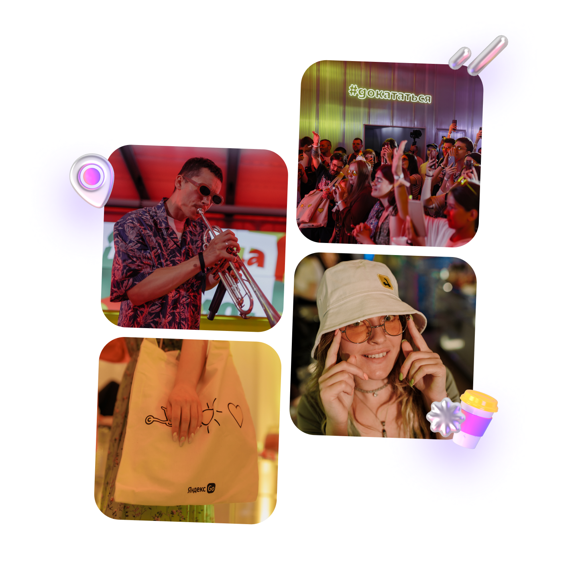

Вот что даёт участие
в клубе
-
0 ₽ за старт в каждой поездке
-
Катаетесь с друзьями? Бронируйте до трёх самокатов с аккаунта с абонементом — так у всех будет бесплатный старт
-
Бесплатная пауза 15 минут в поездке — например, чтобы зайти за кофе или передохнуть
-
Если самокат недостаточно заряжен или с ним неудобно переходить дорогу, замените по пути на другой — это бесплатно
Эксклюзивный доступ
к событиям Самокатов
С абонементом — у вас доступ к специальным мероприятиям, скидки и классный мерч. В 2023 году мы танцевали на Даче Плюс с Антохой MC, катались на самокатах с Сергеем Мезенцевым и слушали хор Attaque de Panique

Купить абонемент и вступить в клуб смогут те, кто в Плюсе
За каждую поездку на самокатах такие пользователи получают кешбэк баллами. Баллы можно тратить на поездки на самокатах и такси с Яндекс Go, покупки и заказы в других сервисах Яндекса
80 % наших пользователей уже в клубе и экономят на поездках
Присоединяйтесь — опция начнёт действовать в начале сезона–2024. Об открытии сезона предупредим заранее, чтобы вы были готовы